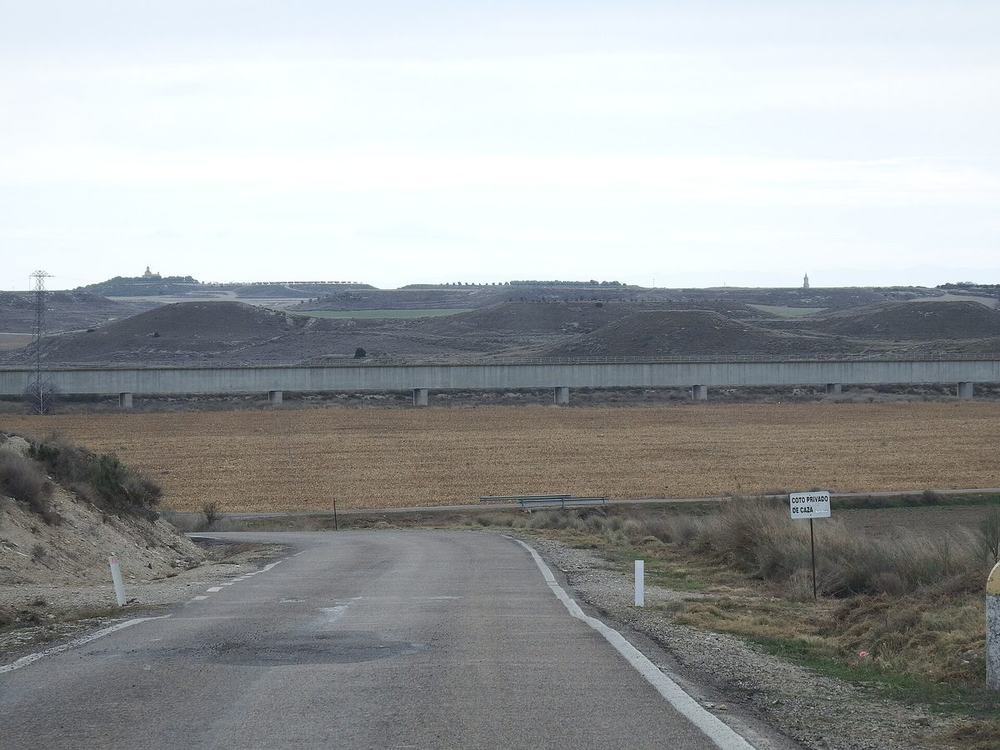

스페인 우에스카 관개 공동체 5곳, 공동 회사 세워 태양광 관개 추진…산미겔 1,820kW 자가소비

EU 혁신기금 사업 CO2-FrAMed에 보조금 435만6,000유로·은행 신용한도 740만 유로, 다섯 공동체가 구성한 회사가 설비 자금 조달·건설·운영 맡아…첫 10년 이산화탄소 약 1만7,700톤 감축 추산
스페인 아라곤 우에스카주의 관개 공동체 5곳이 함께 꾸린 회사를 앞세워, 물을 퍼 올리는 양수 펌프의 전기를 태양광으로 바꾸는 유럽연합(EU) 사업 'CO2-FrAMed'를 추진하고 있다. 참여 공동체는 발파르타의 산미겔(San Miguel)과 몰리나르 델 플루멘, 라 사비나, 소데토-알베루엘라, 알코나드레이며, 다섯 공동체가 구성하고 SolAqua가 운영을 이끄는 회사 'CO2Framed Riego Solar'가 설비의 자금 조달과 건설·운영을 맡는다. 1987년 세워져 공동체원 168명이 온티녜나·페냘바·세나·발파르타·비야누에바 데 시헤나에 걸친 3,815헥타르의 농지 관개를 관리하는 산미겔은 이 사업으로 남는 전기를 팔지 않는 자가소비형 1,820kW 태양광을 설치해 양수 펌프에 재생전기를 대고 있다. 사업 전체에는 EU 혁신기금 보조금 435만6,000유로가 지원되고 카하마르(Cajamar) 은행과 맺은 740만 유로 신용한도가 더해졌으며, 재생에너지 전력 매매계약과 설비 운영을 살피는 감시·분석 체계도 함께 들어갔다. 컨소시엄에는 마드리드 공과대학과 스페인 전국 관개공동체연합(Fenacore), Cingral, QPV, 알토 아라곤 관개 총공동체가 참여하며, 전국 관개공동체연합은 사업 전체로 가동 첫 10년 동안 이산화탄소 환산 약 1만7,700톤을 줄일 것으로 추산했다. 공동체 측은 경쟁력 있는 값에 태양광 전기를 공급하고 설비의 신뢰성을 높여 이 모델을 다른 관개 지역으로 넓히는 것이 목표라고 설명했다.
시민에너지 관점
농민 168명이 3,815헥타르의 물을 함께 관리하는 산미겔을 비롯한 공동체 다섯 곳이 각자 발전소를 꾸리는 대신 회사 하나를 함께 세워 자금 조달과 건설·운영을 맡긴 것은, 작은 생산자 조직이 힘을 묶어 EU 보조금과 은행 신용을 끌어오는 방식을 보여 준다. 공동 회사의 운영을 외부 전문 기업이 이끌면 공동체의 몫과 목소리가 흐려질 수 있다는 우려가 나올 수 있고 실제로 회사 지분 구조는 공개되지 않았지만, 남는 전기를 팔지 않고 펌프에 바로 쓰는 자가소비 설계라 이 사업의 목적은 전기 판매 수익보다 농사에 드는 에너지 비용을 낮추는 데 있다. 물을 함께 관리해 온 공동체가 에너지까지 함께 소유할 때 생업 비용을 줄인 이익이 지역 밖으로 새지 않는다. 국내에서도 농업용수를 함께 쓰는 마을과 농민 조직 여러 곳이 공동 법인을 세워 양수장과 관정의 전기를 태양광으로 바꾸고, 그 법인의 지분이 농민에게 있도록 처음부터 정해 두는 길을 열어야 한다.
출처: Diario del Alto Aragón 2026-10-29 Marga Bretos 원문 보기
スペイン・ウエスカの灌漑共同体5団体、共同会社を設立し太陽光灌漑を推進…サン・ミゲルで1,820kWの自家消費
EUイノベーション基金事業CO2-FrAMedに補助金435万6,000ユーロ・銀行の融資枠740万ユーロ、5共同体で構成する会社が設備の資金調達・建設・運営を担う…最初の10年でCO2約1万7,700トン削減と試算
スペイン・アラゴン州ウエスカ県の灌漑共同体5団体が、共同で設けた会社を通じて、水をくみ上げる揚水ポンプの電力を太陽光に切り替える欧州連合（EU）の事業「CO2-FrAMed」を進めている。参加するのはバルファルタのサン・ミゲル（San Miguel）とモリナル・デル・フルメン、ラ・サビナ、ソデト・アルベルエラ、アルコナドレの各共同体で、5共同体で構成しSolAquaが運営を率いる会社「CO2Framed Riego Solar」が設備の資金調達と建設・運営を担う。1987年に設立され、168人の組合員がオンティニェナ、ペニャルバ、セナ、バルファルタ、ビジャヌエバ・デ・シヘナにまたがる3,815ヘクタールの灌漑を管理するサン・ミゲルは、この事業で余剰電力を売らない自家消費型の1,820kW太陽光発電所を設置し、揚水ポンプに再生可能電力を供給している。事業全体にはEUイノベーション基金の補助金435万6,000ユーロが充てられ、カハマル（Cajamar）銀行と結んだ740万ユーロの融資枠が加わったほか、再エネ電力の売買契約と設備の稼働を見守る監視・分析システムも組み込まれた。コンソーシアムにはマドリード工科大学、スペイン全国灌漑共同体連合（Fenacore）、Cingral、QPV、アルト・アラゴン灌漑総共同体が加わり、Fenacoreは事業全体で稼働後10年間にCO2換算で約1万7,700トンを削減できると試算している。共同体側は、競争力のある価格で太陽光電力を供給し設備の信頼性を高めて、このモデルを他の灌漑地域へ広げることが目標だと説明した。
市民エネルギーの視点
168人の農家が3,815ヘクタールの水を共同で管理するサン・ミゲルをはじめとする5つの共同体が、それぞれ発電所を持つのではなく一つの会社を共に設けて資金調達と建設・運営を任せたことは、小さな生産者組織が力を束ねてEUの補助金や銀行融資を呼び込むやり方を示している。共同会社の運営を外部の専門企業が率いれば共同体の取り分や発言力が薄れるとの懸念も出得るし、実際に会社の持ち分構成は公表されていないが、余剰電力を売らずにポンプで直接使う自家消費の設計であり、この事業の狙いは売電収入よりも農業にかかるエネルギー費用を下げることにある。水を共に管理してきた共同体がエネルギーまで共に所有すれば、生業のコストを減らした利益が地域の外へ流れ出ない。韓国でも農業用水を共に使う集落や農民組織が共同法人をつくり、揚水場や井戸の電力を太陽光に切り替え、その法人の持ち分を農民が持つよう最初から定める道を開くべきだ。
出典: ディアリオ・デル・アルト・アラゴン（Diario del Alto Aragón） 2026-10-29 マルガ・ブレトス 原文を読む
西班牙韦斯卡5个灌溉共同体合组公司推进光伏灌溉……圣米格尔建成1,820kW自发自用
欧盟创新基金项目CO2-FrAMed获补助435万6,000欧元及银行授信740万欧元，由5个共同体组成的公司负责设施融资、建设和运营……预计头10年减排二氧化碳约1万7,700吨
西班牙阿拉贡自治区韦斯卡省的5个灌溉共同体，正通过共同组建的公司推进欧盟项目"CO2-FrAMed"，把提水泵站的用电改为光伏发电。参与的共同体为瓦尔法尔塔的圣米格尔（San Miguel）以及Molinar del Flumen、La Sabina、Sodeto-Alberuela和Alconadre，由这5个共同体组成、SolAqua主导运营的公司"CO2Framed Riego Solar"负责设施的融资、建设和运营。圣米格尔成立于1987年，168名成员管理着横跨Ontiñena、Peñalba、Sena、Valfarta和Villanueva de Sijena的3,815公顷灌溉农田；它在该项目中建成了不出售余电的1,820kW自发自用光伏电站，为提水泵供应可再生电力。整个项目获得欧盟创新基金435万6,000欧元补助，另与Cajamar银行签订了740万欧元授信额度，并配套了可再生电力购售合同以及监测分析设施运行的系统。项目联合体成员包括马德里理工大学、西班牙全国灌溉共同体联合会（Fenacore）、Cingral、QPV和上阿拉贡灌溉总共同体；据Fenacore估算，整个项目在运行头10年可减排约1万7,700吨二氧化碳当量。共同体方面表示，目标是以有竞争力的价格供应光伏电力、提高设备可靠性，并把这一模式推广到其他灌区。
市民能源视角
以168名农民共同管理3,815公顷用水的圣米格尔为首，5个共同体没有各自建电站，而是共同成立一家公司负责融资、建设和运营，展示了小型生产者组织联合起来争取欧盟补助和银行信贷的路径。有人可能担心，由外部专业企业主导运营会稀释共同体的份额和话语权，而公司的股权结构也确实没有公开；但这是余电不上网、直接供泵站使用的自发自用设计，项目的目的在于降低农业能源成本，而非售电收益。当一起管理用水的共同体也共同拥有能源，节省生产成本带来的利益就不会流出地方。韩国也应开辟这样的道路：让共用农业用水的村庄和农民组织共同成立法人，把扬水站和机井的用电换成光伏，并从一开始就规定该法人的股权归农民所有。
来源: Diario del Alto Aragón 2026-10-29 马尔加·布雷托斯（Marga Bretos） 查看原文
Five irrigation communities in Huesca, Spain, form joint company to run irrigation on solar power, with 1,820kW of self-consumption at San Miguel
The EU Innovation Fund project CO2-FrAMed has a 4,356,000-euro grant and a 7.4 million-euro bank credit line; a company made up of the five communities finances, builds and operates the plants, with about 17,700 tonnes of CO2 expected to be avoided in the first 10 years
Five irrigation communities in the province of Huesca, in Spain's Aragon region, are using a company they formed together to switch the electricity for their water pumps to solar power under the European Union project CO2-FrAMed. The participants are San Miguel in Valfarta along with Molinar del Flumen, La Sabina, Sodeto-Alberuela and Alconadre, and the company CO2Framed Riego Solar, made up of the five communities and managed by SolAqua, is responsible for financing, building and operating the installations. San Miguel, founded in 1987, has 168 members who manage irrigation across 3,815 hectares in Ontiñena, Peñalba, Sena, Valfarta and Villanueva de Sijena, and under the project it has installed a 1,820kW solar plant for self-consumption with no surplus sales, supplying renewable power to its pumps. The project as a whole has a 4,356,000-euro grant from the EU Innovation Fund, backed by a 7.4 million-euro credit line arranged with the bank Cajamar, and it includes renewable power purchase contracts and systems to monitor and analyse how the plants perform. The consortium also includes the Technical University of Madrid, Spain's national federation of irrigation communities (Fenacore), Cingral, QPV and the Comunidad General de Riegos del Alto Aragón, and Fenacore estimates that the project as a whole will avoid about 17,700 tonnes of CO2 equivalent in its first 10 years of operation. The communities said the aim is to supply solar electricity at competitive prices, make the equipment more reliable and help the model spread to other irrigated areas.
Citizen Energy View
Instead of each building its own plant, five communities, including San Miguel, where 168 farmers jointly manage water for 3,815 hectares, set up one company together to handle financing, construction and operation, showing how small producer organisations can pool their strength to attract EU grants and bank credit. Some may worry that if an outside specialist firm runs the joint company, the communities' share and voice could fade, and the company's ownership structure has indeed not been disclosed; but because the design is self-consumption, using the power directly at the pumps with no surplus sold, the project's purpose is to cut farming's energy costs rather than to earn power sales income. When communities that have long managed water together also own their energy together, the savings on the cost of making a living do not leak out of the region. Korea, too, should open a path for villages and farmer groups that share agricultural water to form joint entities that switch pumping stations and wells to solar power, with the rule set from the start that farmers hold the shares in those entities.
Source: Diario del Alto Aragón 2026-10-29 Marga Bretos Read the original